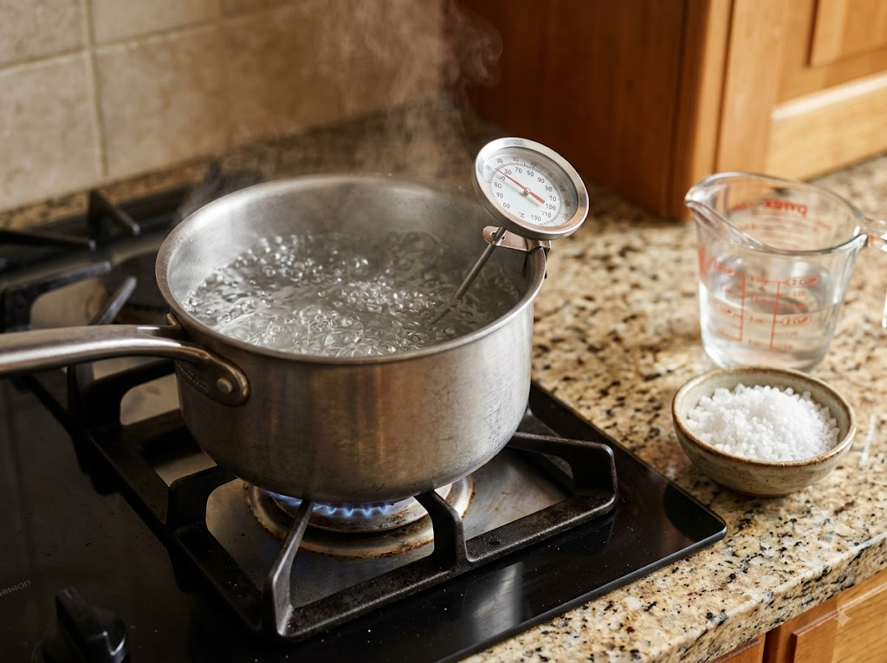
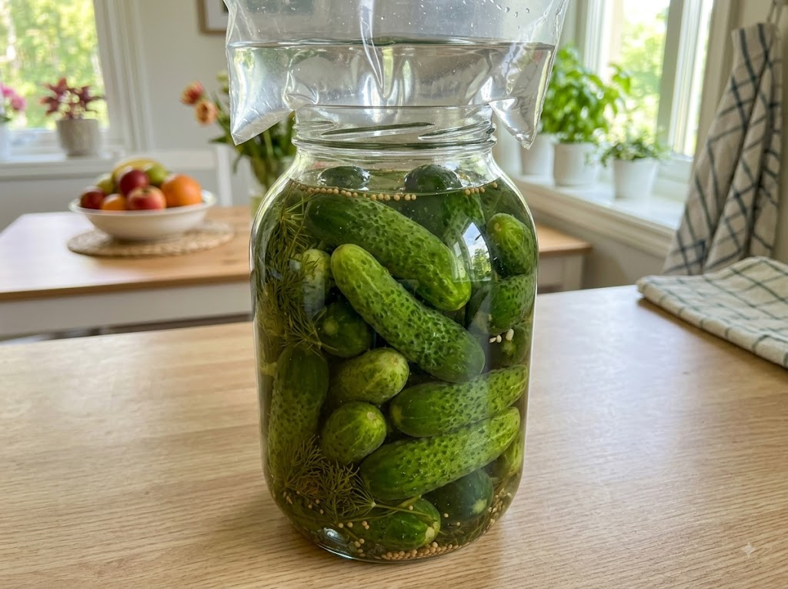

여름이 되면 밥상에 오르는 오이지는 짭조름하고 아삭한 맛으로 입맛을 돋워주는 한국 전통 소금절임 반찬입니다. 그런데 직접 담가 보면 예상보다 물이 많이 생기거나, 오이가 흐물흐물해지거나, 짠 맛이 고르지 않은 경우가 많습니다.
오이지는 만드는 재료가 단순한 만큼 소금물 비율·온도·누름돌이라는 세 가지 변수만 잘 잡으면 누구나 아삭하고 맛있게 담글 수 있습니다. 이 글에서는 오이지 담그는 전 과정을 단계별로 상세히 안내하고, 자주 실패하는 원인과 해결책까지 함께 짚어 드리겠습니다.
오이지는 오이를 소금물에 절여 발효시킨 한국 전통 음식으로, 냉장고가 없던 시절에도 여름 내내 오이를 저장해 먹을 수 있게 해 준 지혜로운 보존 식품입니다. 단순히 짠 절임이 아니라 적절한 발효를 거치면서 유산균이 생성되어 특유의 새콤하고 감칠맛 나는 풍미가 더해집니다.
오이소박이나 오이물김치와 다른 점은 양념 없이 소금물만으로 절인다는 것입니다. 담근 지 1~2일이면 밥반찬으로 먹기 시작할 수 있고, 냉장 보관하면 2~3주까지 아삭하게 즐길 수 있습니다.
오이지를 처음 담가 보려는 분들도 이 글의 순서대로만 따라오시면 어렵지 않게 성공하실 수 있습니다.
오이지의 아삭함은 오이 선택에서 절반이 결정됩니다. 어떤 오이를 고르느냐에 따라 최종 식감이 크게 달라집니다.
추천 품종
• 다다기오이: 껍질이 비교적 얇고 씨가 적으며, 절임 후에도 아삭함이 잘 유지됩니다. 마트에서 가장 흔하게 구할 수 있어 오이지 입문용으로 적합합니다.
• 가시오이(취청오이): 껍질이 단단하고 두꺼워 오래 절여도 물러지지 않습니다. 맛이 진하고 전통 오이지 느낌이 납니다.
피해야 할 오이
• 껍질이 너무 부드럽거나 굵고 길게 자란 오이는 씨가 많고 수분이 많아 절임 후 흐물거리기 쉽습니다.
• 냉장 보관 중 노란빛이 돌거나 끝이 무른 오이는 절임에 적합하지 않습니다.
오이는 비슷한 굵기로 골라야 소금물이 고르게 스며들고 숙성 속도가 균일해집니다.
오이지 실패의 가장 흔한 원인은 소금 농도를 잘못 잡는 것입니다. 너무 싱거우면 부패 위험이 있고, 너무 짜면 아삭함 없이 쪼글쪼글해집니다.
통상적인 황금 비율
오이지 소금물은 반드시 한번 끓인 뒤 식혀서 사용합니다. 생수를 그대로 쓰는 방식도 있지만, 끓임으로써 물을 살균하고 소금을 완전히 녹여 균일한 농도의 절임 환경을 만들 수 있습니다.
소금물 준비 순서
① 냄비에 계량한 물과 굵은 소금을 넣고 강불에서 끓입니다.
② 소금이 완전히 녹으면 불을 끄고 온도를 확인합니다.
③ 60~70℃로 식힌 뒤 오이 위에 붓습니다.
온도가 핵심입니다. 완전히 식힌 소금물(상온)을 부으면 오이 표면이 충분히 절여지지 않아 숙성이 느려집니다. 반대로 팔팔 끓는 소금물을 그대로 부으면 오이가 너무 익어 아삭함이 사라집니다.
60~70℃는 손을 가까이 댔을 때 뜨겁지만 데이지 않는 정도입니다. 요리 온도계가 있다면 정확히 확인하는 것이 가장 좋습니다.

소금물 준비가 끝났다면 이제 오이를 담그는 단계입니다. 용기 선택과 누름돌이 오이지 성공의 나머지 절반을 책임집니다.
용기 준비
• 유리 용기, 도자기 항아리, 또는 BPA-free 플라스틱 밀폐 용기를 사용합니다. 금속 용기는 소금 성분과 반응할 수 있으므로 피하세요.
• 깨끗이 씻어 물기를 완전히 제거한 뒤 사용합니다.
오이 담는 순서
① 깨끗이 씻은 오이의 양 끝을 1cm 정도 잘라냅니다(절임이 빠르게 스며들게 하기 위함).
② 오이를 용기에 세로 또는 가로로 빽빽하게 채웁니다.
③ 식혀 둔 소금물을 오이가 완전히 잠길 때까지 붓습니다.
누름돌 올리기
오이는 소금물보다 가벼워서 반드시 물 위로 뜹니다. 공기에 노출된 부분은 변색·부패하므로 누름돌로 눌러 오이가 소금물에 완전히 잠기게 해야 합니다.
• 무게가 나가는 돌(씻어서 랩으로 감싼 것)을 올려놓거나,
• 깨끗한 비닐봉지에 물을 채워 입구를 묶은 뒤 오이 위에 올리는 방법도 효과적입니다.
• 뚜껑을 덮을 수 있는 용기라면, 뚜껑 바로 아래까지 소금물을 채워 공기 접촉을 최소화하는 방법도 있습니다.
오이지는 담근 직후보다 적절히 숙성된 후에 맛이 훨씬 좋아집니다. 숙성 온도와 기간이 맛을 크게 좌우합니다.
실온 숙성
• 기온 25~30℃ 환경에서 1~2일 두면 유산균 발효가 시작되며 특유의 새콤한 향과 맛이 납니다.
• 이 단계가 지나면 냉장 보관으로 옮겨야 과발효를 막을 수 있습니다.
냉장 보관
• 냉장(4℃ 내외)에서는 발효 속도가 느려지므로 3~5일 후부터 먹기 시작하는 것이 적당합니다.
• 냉장 보관 시 2~3주까지 아삭하게 즐길 수 있습니다.
주의사항
• 여름 한낮에 실온에 너무 오래 두면 과발효로 신맛이 지나치게 강해질 수 있습니다.
• 하루에 한 번씩 오이가 소금물 밖으로 나오지 않았는지 확인하는 것이 좋습니다.
"오이지를 담갔더니 물이 너무 많이 생겼다"는 고민을 자주 하십니다. 이 현상의 원인과 해결법을 정리해 드립니다.
물이 많이 생기는 원인
• 소금 농도가 낮을 때: 삼투압이 약해 오이 내부 수분이 과도하게 빠져나옵니다.
• 누름돌이 부족할 때: 오이가 소금물 위로 뜨면서 절임이 불균일해지고, 공기에 닿은 부분에서 수분이 과다 증발합니다.
• 오이를 너무 오래 실온에 둘 때: 과발효로 조직이 물러지며 수분이 추가로 방출됩니다.
아삭하게 유지하는 핵심 3가지
① 소금물이 오이를 항상 완전히 덮어야 합니다. 소금물이 줄었다면 동일 농도의 소금물을 추가합니다.
② 적절한 누름돌 무게: 오이 1kg 기준으로 300~500g의 눌림이 필요합니다. 물 채운 비닐봉지는 용기 모양에 맞게 밀착되어 특히 효과적입니다.
③ 공기 접촉 최소화: 용기 뚜껑을 닫거나 랩으로 덮어 산화를 막으세요.
아삭한 오이지를 원한다면 냉장 보관으로 발효 속도를 늦추고, 너무 오래 실온에 두지 않는 것이 가장 중요합니다.

잘 익은 오이지는 그냥 썰어 먹어도 맛있지만, 간단한 양념을 더하면 밥반찬과 국으로도 훌륭하게 변신합니다.
오이지무침
① 오이지를 먹기 좋은 크기로 어슷하게 썹니다.
② 찬물에 10~15분 담가 짠기를 뺀 뒤 물기를 꼭 짭니다.
③ 참기름·고춧가루·다진 마늘·깨·설탕 약간을 넣고 조물조물 무칩니다.
④ 쪽파나 통깨를 올려 마무리합니다.
물기를 충분히 짜지 않으면 무침이 금방 물이 생기므로 손으로 꼭 짜는 것이 포인트입니다.
오이지냉국
① 오이지를 얇게 슬라이스해 찬물에 헹구고 물기를 줄입니다.
② 찬물에 식초 1큰술·설탕 0.5큰술·깨·약간의 소금으로 국물을 만듭니다.
③ 오이지를 국물에 넣고 냉장고에 10분 이상 차게 둔 뒤 냅니다.
오이지냉국은 입맛 없는 한여름 더위에 특히 잘 어울리는 시원하고 청량한 국으로, 밥 한 그릇 뚝딱 비우게 만드는 여름 별미입니다.
Q. 소금물을 끓이지 않고 생수에 소금을 녹여 부어도 되나요?
가능하긴 하지만, 끓인 소금물에 비해 절임 초기에 잡균 번식 위험이 조금 더 있습니다. 살균이 되지 않은 상태이므로 여름철에는 특히 끓여서 사용하시는 것을 권장합니다.
Q. 오이지가 너무 짜면 어떻게 하나요?
먹기 전에 얇게 썰어 찬물에 20~30분 담가 두세요. 여러 번 물을 바꿔 주면 짠기가 빠집니다. 오이지무침이나 냉국에 활용할 때도 사전에 물에 담가 간을 조절하는 것이 기본입니다.
Q. 오이지에 마늘이나 청양고추를 넣어도 되나요?
전통 오이지는 소금물만으로 담그지만, 마늘이나 청양고추를 함께 넣으면 풍미가 더해집니다. 다만 첨가물이 들어가면 발효 속도와 방향이 달라질 수 있어, 처음에는 기본 레시피로 한 번 성공한 후 응용하시길 권장합니다.
Q. 오이 표면에 하얀 막이 생겼습니다. 버려야 하나요?
하얀 막은 효모가 표면에 형성된 것으로, 소금물 위쪽에 생기는 경우가 많습니다. 오이가 소금물 밖으로 노출되지 않았다면 걷어내고 계속 사용 가능합니다. 하지만 이미 오이가 물러졌거나 이상한 냄새가 나면 섭취를 중단하시기 바랍니다.
Q. 오이지를 냉동 보관할 수 있나요?
냉동하면 수분이 얼면서 조직이 파괴되어 아삭함이 사라집니다. 냉동 보관보다는 냉장 보관 상태로 2~3주 이내에 소비하시는 것이 좋습니다.
#오이지 #오이지담그는법 #여름김치 #소금절임 #여름반찬 #한국전통음식 #집반찬 #오이요리 #발효음식 #여름요리